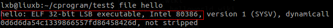
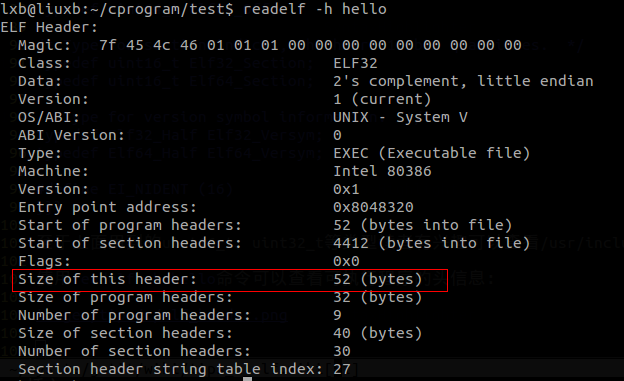
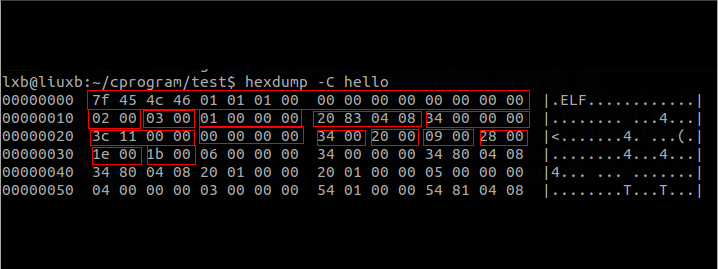

曾看过这样一句话：
一个优秀的程序员，对自己所写的程序的每一个字节都了然于胸。
下面就用鼎鼎大名的Hello World程序来分析ELF文件结构，力求通俗。
#include <stdio.h>
int main(void)
{
//This is a comment.
printf("Hello World!\n");
return 0;
}
利用gcc hello.c -o hello编译链接成可执行文件。
可以使用file hello查看文件格式：

其中ELF结构体的定义在/usr/inlcude/elf.h文件中，可以看到Elf_32Ehdr
typedef struct
{
unsigned char e_ident[EI_NIDENT]; /* Magic number and other info */
Elf32_Half e_type; /* Object file type */
Elf32_Half e_machine; /* Architecture */
Elf32_Word e_version; /* Object file version */
Elf32_Addr e_entry; /* Entry point virtual address */
Elf32_Off e_phoff; /* Program header table file offset */
Elf32_Off e_shoff; /* Section header table file offset */
Elf32_Word e_flags; /* Processor-specific flags */
Elf32_Half e_ehsize; /* ELF header size in bytes */
Elf32_Half e_phentsize; /* Program header table entry size */
Elf32_Half e_phnum; /* Program header table entry count */
Elf32_Half e_shentsize; /* Section header table entry size */
Elf32_Half e_shnum; /* Section header table entry count */
Elf32_Half e_shstrndx; /* Section header string table index */
} Elf32_Ehdr;
下面只分析32位机器上的ELF文件格式，为了达到良好的可移植性，ELF文件定义了一套自己的类型如下：
/* Type for a 16-bit quantity. */ typedef uint16_t Elf32_Half; typedef uint16_t Elf64_Half; /* Types for signed and unsigned 32-bit quantities. */ typedef uint32_t Elf32_Word; typedef int32_t Elf32_Sword; typedef uint32_t Elf64_Word; typedef int32_t Elf64_Sword; /* Types for signed and unsigned 64-bit quantities. */ typedef uint64_t Elf32_Xword; typedef int64_t Elf32_Sxword; typedef uint64_t Elf64_Xword; typedef int64_t Elf64_Sxword; /* Type of addresses. */ typedef uint32_t Elf32_Addr; typedef uint64_t Elf64_Addr; /* Type of file offsets. */ typedef uint32_t Elf32_Off; typedef uint64_t Elf64_Off; /* Type for section indices, which are 16-bit quantities. */ typedef uint16_t Elf32_Section; typedef uint16_t Elf64_Section; /* Type for version symbol information. */ typedef Elf32_Half Elf32_Versym; typedef Elf64_Half Elf64_Versym; #define EI_NIDENT (16)
至于上面用到的uint16_t、uint32_t等类型读者有兴趣可以查看/usr/include/stdint.h文件。
使用readelf -h hello命令可以查看可执行程序的头信息：

从上图中我们可以得知elf头的大小为52的字节，有兴趣的读者可以回头计算一下Elf32_Ehdr结构体的大小。
使用hexdump -C hello命令可以查看二进制可执行程序：

ELF头信息的格式可以从上图中看出一二了。